“编学编玩”用Pygame编写游戏（8）GreedSnake贪食蛇小游戏
作者:J.sky 发布时间:2018-01-05 09:41:22 标签: pygame
在编写游戏的时候常常不知道从何处入手，如果真的想不出从哪开始写，不妨从游戏的背景开始^o^.


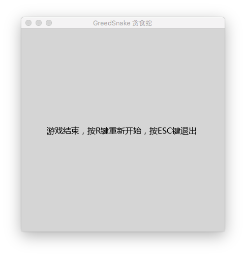
GreedSnake贪食蛇设计思路
游戏在设计前，可以使用一些做图软件先进行画面设计，至少需要有一个大体样式，对颜色做一些定义，我用fireworks简单的布局了一下， 这样的好处是我们可以通过绘制先计算出来游戏中需要的一些数值，比如蛇身体及背景方格的大小。
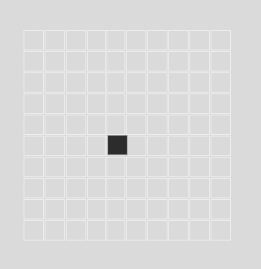
除去游戏的开始和结束画面，整个游戏的核心逻辑很简单：
- 游戏的背景渲染
- 蛇的运动
- 食物的生成
- 游戏逻辑判断：蛇吃食物后蛇身的变化及游戏是否结束？
当然可能还会有其它不同事之处，但我们这里讨论的是游戏核心的逻辑，那么，我们现在开始用PY_RPG+pygame来实现这个简单的小游戏吧。
游戏背景渲染
分别创建三个游戏Scene,分别代表游戏的开始、进行、结束三个场景，然后在游戏进行的场景也就是主场景中进行游戏的内容绘制。
对于GreedSnake来说，我们需要有一组是浅色网格组成的背景，
对于游戏背景，我单独创建了一个class GameBackground,背景绘制的核心逻辑代码如下：
self.screen.fill((221, 221, 221))
for i in range(0, 10):
for j in range(0,10):
pygame.draw.rect(self.screen, (238,238,238), (i*40, j*40, 40, 40), 1)
在场景中创建对象后，进行渲染，效果如下：
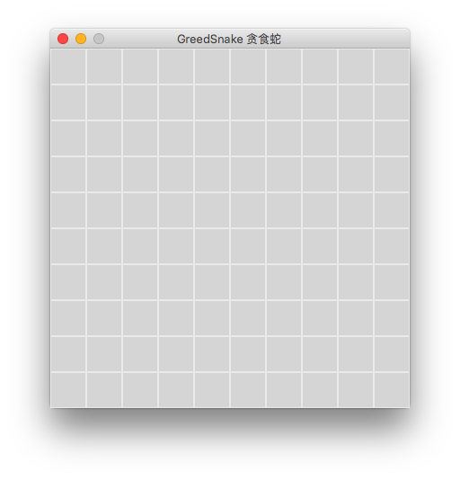
绘制蛇并让它动起来
默认出场的蛇身体有五个节点，我们先在场景中绘制出这条蛇，而且先不必让蛇动起来。为此我创建了一个SnakeBody类，定义蛇的身体上的一节。 这样我们在游戏场景中创建一个list用来表示蛇的身体：
self.bodys = []#创建一个精灵组，用来放置蛇的身体
for i in range(0,4):
self.bodys.append(SnakeBody(self.screen,3*40,(3+i)*40))
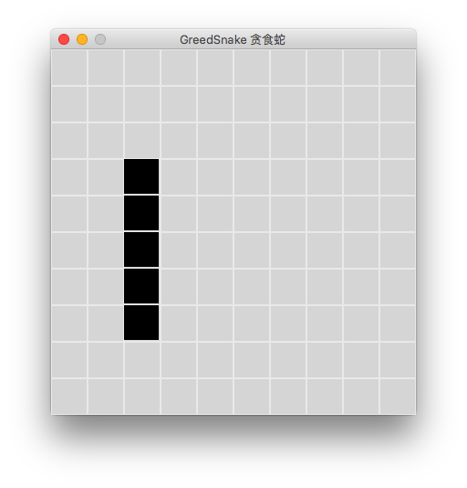
蛇是出来了，不过没有蛇头哇，如果满屏都是蛇身的话，无法分辨哪个是头啦，所以我们得把头部变成其它颜色加以区分，看来还得加入颜色的参数:
self.bodys = [] # 创建一个精灵组，用来放置蛇的身体
for i in range(0, 5):
if i == 0:
color = RED
else:
color = BLACK
self.bodys.append(SnakeBody(self.screen, 2 * 40, (6 - i) * 40, color))

这次蛇身与头区分开来了，接下来，我们让蛇动起来，可以根据键盘上的方向键来控制他的移动方向。 关于蛇的移动逻辑：
- 蛇身是一个list，每次移动list中最后一个蛇节点坐标修改成前一个即可，第一个通过移动方向来判断他的坐标。在
GreedSnake.update()中，我们通过判断来更新蛇的位置。 GreedSnake.handle_event()中，监控键盘事件，修改self.direction的属性值，以做到控制蛇的移动方向
具体代码就不贴了，可以参考源文件代码。
生成食物与吃掉食物。
关于生成食物的逻辑主要是有一点，不在能生在蛇身上节点的位置，只要食物和蛇身的坐标没有重叠，那么这个位置即可生成食物。吃掉食物，先判断蛇的移动方向，然后取蛇身list[0]，根据移动的方向模拟增加一个移动位置，如果正好遇食物重叠，那么增加食物的坐标为当前蛇头的坐标即可，然后记得把之前的蛇头颜色换成蛇身的。
游戏结束
游戏结束的逻辑只有两点：蛇移动出场景外了，还有就是蛇头碰到蛇身了。
游戏暂停
在游戏场景类中加入了一个pause的属性，这样通过键盘监控来修改它的布尔值，然后利用这个布尔值在update中控制整个游戏的更新，这样就可以达到控制游戏暂停了。
总结
教程中只是重点的介绍了游戏的逻辑设计，这样的话即使你换成别的编程言也一样可以制作出来，另外这个游戏的食物生成与游戏结束的判断上有很多方法，你也可以尝试其它方法。
本文源码下载
请git clone My_pygame下所有代码，以免造成游戏跑不起来的情况。本例源文件：PY_RPG.GreedSnake.py
2018 新年快乐！希望在coding中找到自己的快乐与希望
作者:J.sky 发布时间:2018-01-01 17:40:57 标签: 站长吐槽
转眼间时光匆匆流过，稀里糊涂的又过去了一年，大约2017年6月时我开始了博客的搭建与设计，8月份上线运营维护，这期间又草草聊聊的写了71篇技术相关的博文。。。这一深一浅的一路走来，希望自己在编程的路上走得更坚实更努力一些！
编程之路
断断续续的自学编程有10年多了，其中有苦有乐，成绩自我评价也就是接近及格那种。期间接触过好多种编程语言，就像打游戏一样，要把所有的职业都玩一遍，每个职业都练了几个月最后都放弃了，其中拿捏时间比较长的有：php js java 和现在正在深度学习的Python。其实一开始学习Coding的时候也是没有什么目标的，只是有一次在论坛做版主的时候被安排了一个任务，任务中需要用到html+css排版，然后自己就去百度搜索了一下相关知识，然后就一发不可收拾的迷上了编码。虽然最开始的时候学的是易语言，而且竟然学用了近二年之久，最后才因为某种原因不得不放弃它。之后就是各种语言职业的轮番试玩了。。。一直到14年左右，才开始稳定到java，16年弃坑java转而Python。
2018的书单
今年有一些目标和计划，除了努力工作之外，还是要继续学习Python，然后继续学习一门新的编程语言，感觉这门语言非C++莫属了，天下武功（编码）少林正宗（C++）。
然后计划读30本书，其中10本编程专业书籍，20本兴趣书籍。写50篇或更多的专业博文，用来记录自己的学习历程，巩固学习进度，加深学习印象。
编程计划
计划写一个学习Python编程的RPG游戏及开发一个Django开源blog。我会为此而努力。2018，新的一年，希望大家更加努力，早日实现自己的梦想。
最后，我告诉你：相信我，多读书，不会错的。
“编学编玩”用Pygame编写游戏（7）Pingball弹球小游戏
作者:J.sky 发布时间:2017-12-29 20:18:35 标签: pygame
以前学java的时候用java做了一个简单弹球小游戏，觉得还是蛮有意思的，这次用pygame重写一下试试，以前觉得游戏编程很简单，可能是考虑的太简单了，游戏的编写是步步为营，逻辑紧扣，错一点游戏都无法运行的，所以学习用面向对象方式编写游戏，是对python编程学习的强化练习，大家可以多试试。
Pingball游戏的设计
游戏很小，场景中的精灵有两个：球拍和一个小球。游戏的顺序包括：游戏开始画面，游戏主场景，游戏结束画面。 游戏逻辑：判断小球的Y坐标低于球拍的Y坐标值即为游戏结束，球拍和小球都有自己的运动逻辑。这么简单的游戏我们从哪里入手呢？ 肯定是先创建一个游戏窗口啦：）
设定一些游戏的基本数据
游戏包括的主要数据有：
- 游戏场景（宽+高）
- 球拍，（宽，高，位置，移动速度）
- 小球，（宽，高，位置，移动速度）
- 游戏逻辑，判断游戏是否结束，暂停游戏，重新开始游戏，及一些文字的打印。
有了这些构思，我们一样一样的通过我们之前封装的PY_RPG及pygame提供的一些功能来实现这个小游戏。
创建场景
一共有三个场景，分别为游戏开始画面MainScene游戏主场景Pingball游戏结束画面GameOverScene
先创建三个场景的类，通过继承PY_RPG.Scene，会很方便的创建出三个类，分别修改三个场景的一些参数，然后设置键盘判断，进行游戏场景的跳转。
因为Scene中的三个方法分工非常明确，我们可以很好的控制游戏场景，这样我们可以先把三个场景制作出来，然后进行测试，虽然游戏主场景没有任何精灵，
但游戏场景整体是可以切换的。
创建球拍与球
Racket和Ball分别进行一些属性设置，其中Racket相对来说比较简单，只需要左右移动，做一个场景边界判断即可。
Ball的属性多了一些，需要有移动速度，需要通过update方法进移动的控制。
游戏逻辑判断
在游戏主场景中的Pingball.update方法中进行了一些游戏逻辑判断，包括：球遇到边界反弹，小球遇到球拍反弹后增加速度，和游戏结束的判断。
这个方法中还需要添加球与球拍自己的update方法,用来更新自己的坐标变化。
游戏结束
游戏结束后，还可以通过按键重新开始，在Pingball中有个replay的函数，是用来控制重新开始后球体的位置.
功能扩展
这个弹球游戏只完成了最最最基本的功能，扩展性很强，比如添加关卡，打印得分，增加一些特效，只要你想修改，弹球也一样可以玩的很嗨。
以下为游戏效果图，建议下载相关代码跑一下，有问题可以留言给我。
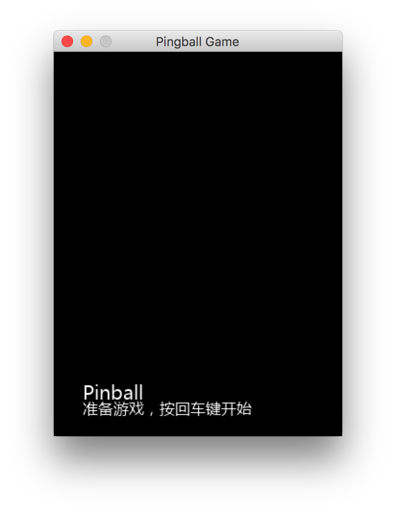
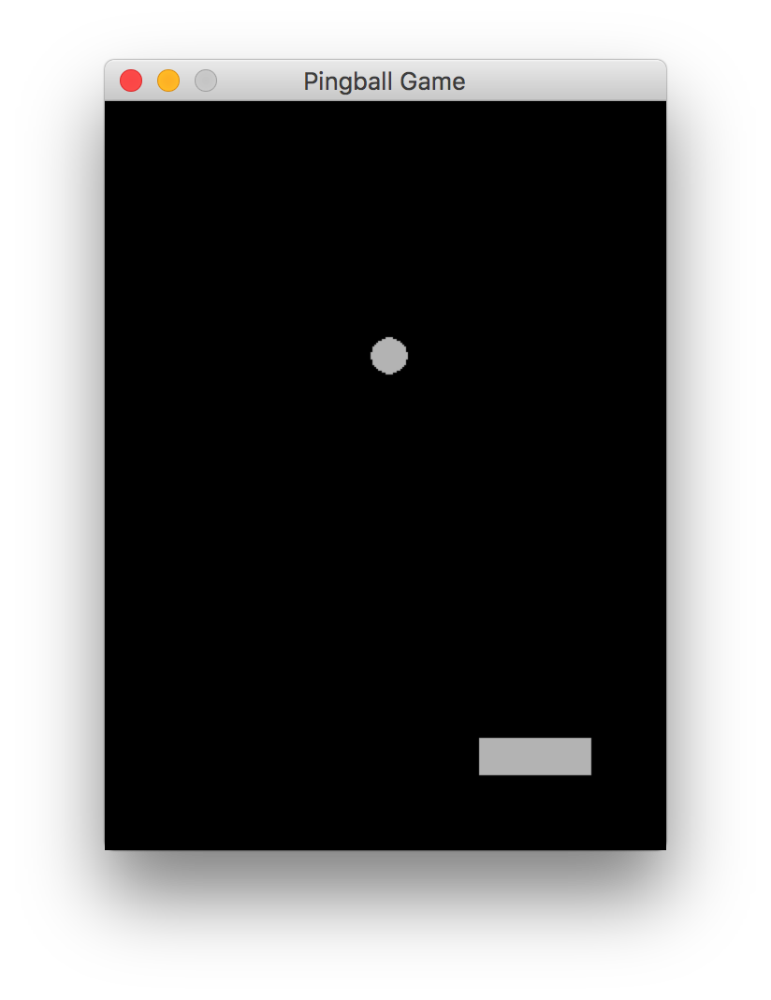
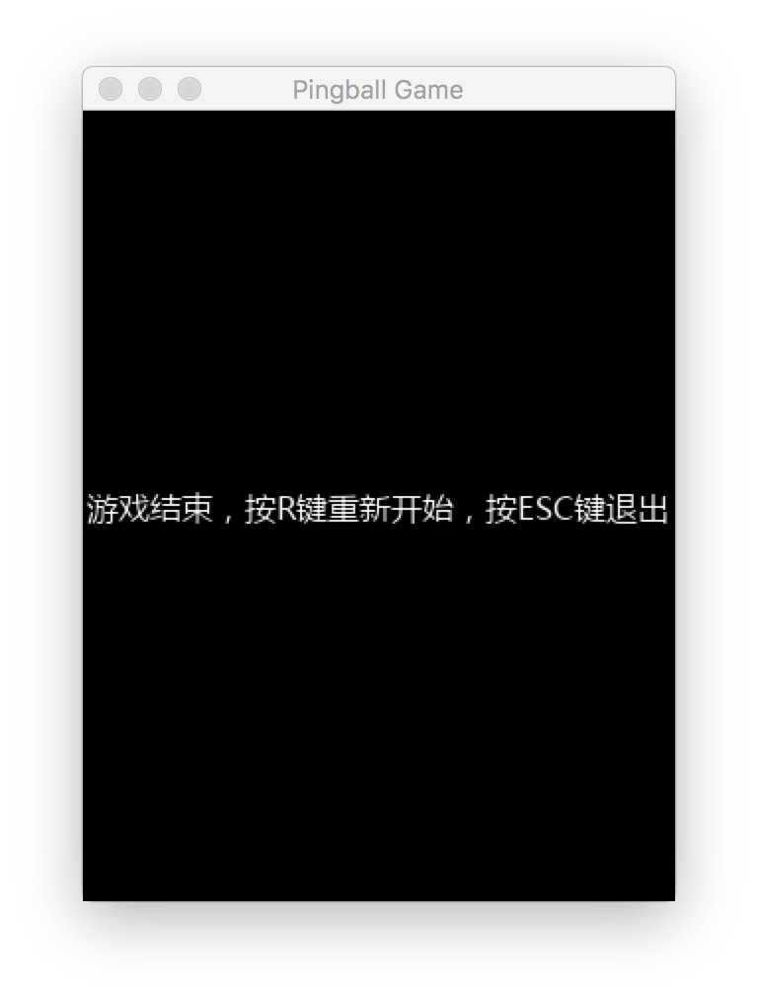
本文源码下载
请git clone My_pygame下所有代码，以免造成游戏跑不起来的情况。本例源文件：PY_RPG.pingball.py
“编学编玩”用Pygame编写游戏（6）PY_RPG 一个pygame的简单封装。
作者:J.sky 发布时间:2017-12-28 21:41:37 标签: pygame
为什么要封装？
pygame写起游戏都是函数式编写，对于一些简单的小游戏或许可以应付，随着游戏内容的增加，我们不可能只在一个.py文件中写下所有的游戏代码，这个时候，我们应该考虑对游戏中组件及对象进行封装，用面向对象的方式来进行游戏代码的编写。
一些具体的封装内容
游戏中的关键词，假设游戏没有条件判断，那么游戏从头运行到尾就是一部电影。 这样的话，我们定义一些游戏的基本对象：
- 渲染器（APP）--只负责渲染游戏场景中存在的游戏片段，属性有：一个游戏片段容器及一些游戏窗口常用设置，并初始化游戏设置。
- 游戏片段(scene)--可能是游戏中的一个片段，一个情节，一节过场，片头，片尾等，游戏片段中包含一个开关属性，用来控制是否可以渲染此游戏片段。
- 游戏逻辑判断器--游戏中的裁判，负责判断修改游戏中的执行条件。
- 精灵--游戏中的角色，他可以是游戏中的场景，主角，配角，怪物，子弹，文字对白。
- 工具类包括：场景中文字渲染工具，游戏中的素材目录的定制，方便调用。一些其它可能需要重复使用的工具。
定义渲染器
渲染器定义为一个游戏的APP，他应该是这个游戏的最外层，可以定义他的，分辨率，标题，刷新频率。 如果游戏中有精灵贯穿全局（比如RPG游戏中的主要角色），这种精灵角色他不属于某个游戏片段，这样他应该存在于这个游戏app中。
定义游戏片段
一个gameApp中，至少得有一个游戏片段，游戏片段包括三个主要方法：
draw() update() handle_event()
这三个方法分别对应:
- 渲染场景
- 更新数据
- 事件处理
当我们继承新建游戏片段类的时候，需要根据自己的需求重写这三个方法。
如何使用PY_RPG？
app = GameApp()#创建游戏
appscreen = app.screen#获取渲染器
app.scenes.append(MainScene(appscreen))#创建游戏菜单
app.scenes.append(TestScene(appscreen))#创建游戏内容
app.scenes.append(GameOverScene(appscreen))#游戏结束画面
app.run() #游戏开始
根据需要创建并重写上边的三个类，然后创建游戏就可以了，现在这样看来，游戏的创建是不是很有层次了？
这个框架还没有封装完毕，我还会继续的，之后的游戏制作都要从这个框架上弄起了，初步还要写几个完整的小游戏例子。
以下为游戏效果图，建议下载相关代码跑一下，有问题可以留言给我。
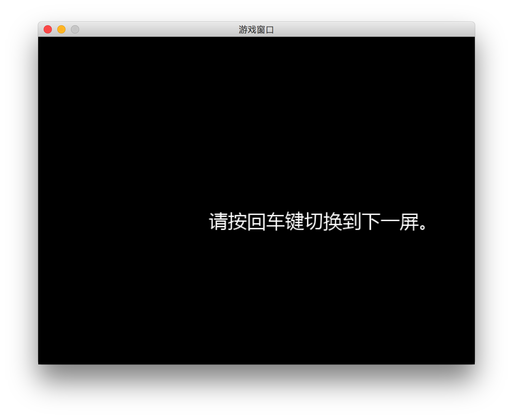
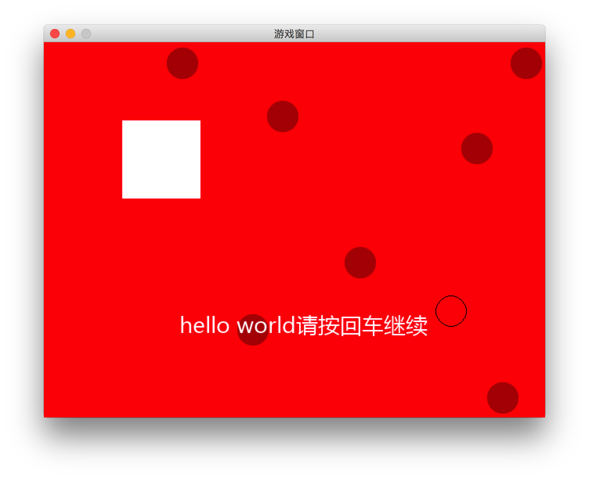
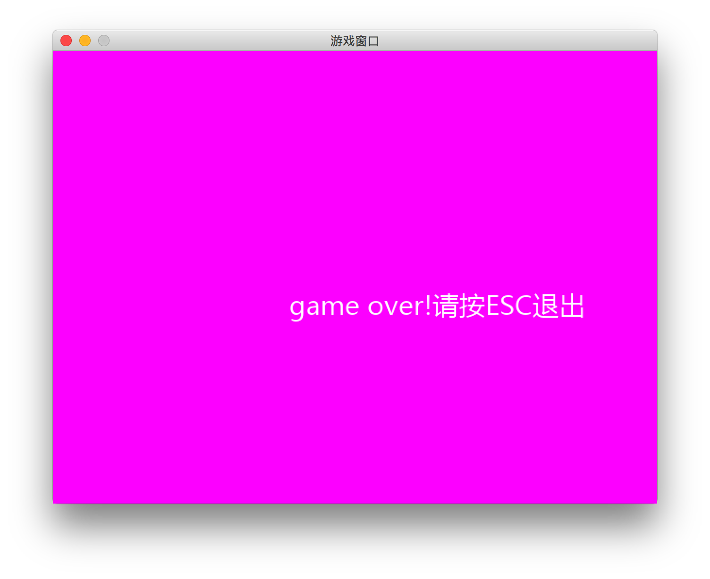
本文源码下载
请git clone My_pygame下所有代码，以免造成游戏跑不起来的情况。本例源文件在PY_RPG目录下
Python TK和Tkinter的GUI编程(10) filedialog 文件目录选择对话框
作者:J.sky 发布时间:2017-12-24 19:21:04 标签: Python GUI
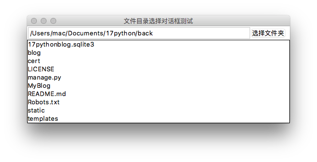
python中有没有文件目录选择对话框？答案是肯定的，这个可以有。tkinter.filedialog这个模块就是负责选择文件及目录的。
tkinter.filedialog的测试
创建一个tk的窗口，包括一个文本框、按键及一个列表框，这些的创建都是很简单的，其中文本框及列表框中的关联数据我们采用tk中特有的绑定数据模式，具体可以查看代码。 测试代码中有一个是按键回调方法filedir，主要是用来弹出目录选择对话框的,filedialog中有很多比较用用的对话框：
'askdirectory',
'askopenfile',
'askopenfilename',
'askopenfilenames',
'askopenfiles',
'asksaveasfile',
'asksaveasfilename'
以上是通过print(dir(filedialog))打印查看到的，也可以通过源码查看到，通过单词字面应该大体上可以了解到这些函数弹出的对话框是干什么用的。
好了，具体测试源码如下：
'''
import tkinter.filedialog as filedialog
from tkinter import *
import os
def filedir():
print('按键已被点击')
v.set('')#清空文本框里内容
var.set((('')))
path = filedialog.askdirectory()
print(dir(filedialog))
if path :
v.set(path)
getdir(path)
def getdir(p):
#把目录中遍历出来的文件目录显示到列表框中
fp = os.listdir(p)
var.set(fp)
root = Tk()
root.title('文件目录选择对话框测试')
frame = Frame(root)
frame.pack(fill=X,side=TOP)
#加入一个文本框显示目录地址
v = StringVar()#绑定文本框的变量
ent = Entry(frame, width=50,textvariable = v).pack(fill=X,side=LEFT)
#加入一个按键，点击后弹出文件目录选择对话框
button = Button(frame, text='选择文件夹', command=filedir).pack(fill=X,side= LEFT)
#加入一个列表框，显示目录中的文件列表
listframe = Frame(root)
listframe.pack(fill=X,side=LEFT)
var = StringVar()#绑定listbox的列表值
var.set((''))
listbox = Listbox(listframe,width=60,listvariable = var).pack()
root.mainloop()